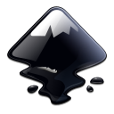
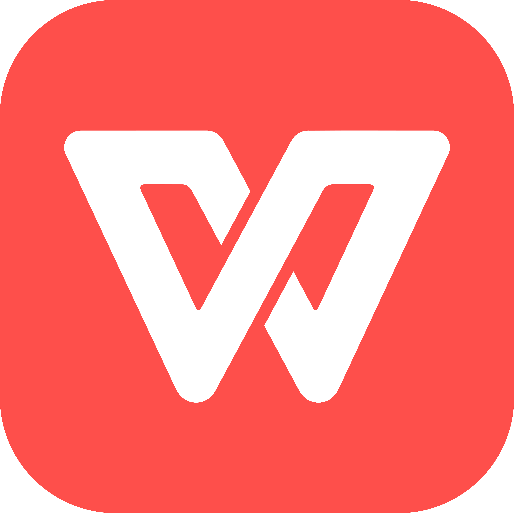

Google Chrome

Google Chrome является наиболее часто используемым веб-браузером в Интернете не зря. С помощью учетной записи Google можно легко синхронизироваться между разными устройствами. Множество расширений, приложений и плагинов еще больше расширяют его возможности.
Установка через терминал
- sudo wget https://dl.google.com/linux/direct/google-chrome-stable_current_amd64.deb
- sudo dpkg -i --force-depends google-chrome-stable_current_amd64.deb
Brave

В качестве альтернативы предлагаю вам рассмотреть браузер - Brave, который по умолчанию блокирует рекламу и скрипты отслеживания, что обеспечивает более быстрый и безопасный просмотр веб-страниц.
Установка через терминал
- sudo apt install curl
- sudo curl -fsSLo /usr/share/keyrings/brave-browser-archive-keyring.gpg https://brave-browser-apt-release.s3.brave.com/brave-browser-archive-keyring.gpg
- echo "deb [signed-by=/usr/share/keyrings/brave-browser-archive-keyring.gpg arch=amd64] https://brave-browser-apt-release.s3.brave.com/ stable main"|sudo tee /etc/apt/sources.list.d/brave-browser-release.list
- sudo apt update
- sudo apt install brave-browser
аудио и видео плееры
Sayonara
Sayonara — это небольшой легкий музыкальный проигрыватель с приятным темным пользовательским интерфейсом. В нем есть все основные функции, которые можно ожидать от стандартного музыкального плеера. Он хорошо интегрируется со средой рабочего стола Ubuntu и не занимает вашу оперативную память.
Установка через терминал
- sudo apt-add-repository ppa:lucioc/sayonara
- sudo apt-get update
- sudo apt-get install sayonara
Audacity

Audacity — это в большей степени аудиоредактор, чем аудиоплеер. Вы можете записывать и редактировать аудио с помощью этого бесплатного инструмента с открытым исходным кодом. Он доступен для Linux, Windows и macOS. Вы можете установить его из Центра программного обеспечения.
Установка через терминал
- sudo apt update
- sudo apt install audacity
MusicBrainz Picard
Picard — это не музыкальный проигрыватель, это музыкальный теггер. Если у вас есть множество локальных музыкальных файлов, Picard позволяет автоматически обновлять их, добавляя в них правильную информацию о треке, исполнителе и альбоме.
Установка через терминал
- sudo apt update
- sudo apt-get install picard
VLC

Бесплатное приложение с открытым исходным кодом, VLC — король видеоплееров. Он поддерживает практически все возможные медиакодеки, позволяет увеличивать громкость до 200% и умеет продолжать воспроизведение с последней известной позиции. В интернете в изобилии существуют целые списки уловок и трюков для VLC, которые вы можете использовать, чтобы выжать из него максимум.
Установка через терминал
- sudo add-apt-repository ppa:videolan/stable-daily
- sudo apt update
- sudo apt install vlc
MPV
MPV — это видеоплеер, заслуживающий большего внимания. Изящный минималистичный графический интерфейс и множество функций, MPV умеет все, что должен уметь качественный видеоплеер в представлении самого дотошного пользователя. Вы даже сможете использовать его в командной строке. Если вас не устраивает VLC, вам обязательно стоит попробовать MPV.
Установка через терминал
- sudo apt update
- sudo apt install mpv
Работа с графикой
GIMP

GIMP — это бесплатный редактор изображений с открытым исходным кодом, доступный для Linux, Windows и macOS. Это лучшая альтернатива Adobe Photoshop в Linux на данный момент. Вы можете использовать его для всех видов редактирования изображений, а в интернете доступно множество ресурсов, которые помогут вам с GIMP.
Установка через терминал
- sudo apt update
- sudo apt -y install gimp
Inkscape

Так же, как и Gimp, Inkscape является бесплатным редактором изображений с открытым исходным кодом, специально ориентированным на векторную графику. С его помощью вы сможете создать векторную графику и логотипы. Вы можете сравнить его с Adobe Illustrator для Linux. И, как и Gimp, Inkscape также имеет множество обучающих программ, доступных в Интернете.
Установка через терминал
- sudo apt update
- sudo apt install inkscape
Редакторы фото и видео
digiKam
С помощью приложения с открытым исходным кодом digiKam вы можете профессионально обрабатывать изображения с высококачественной камеры. digiKam предоставляет все инструменты, необходимые для просмотра, управления, редактирования, улучшения, систематизации, добавления тегов и обмена фотографиями.
Установка через терминал
- sudo apt update
- sudo apt install digikam
Darktable
Darktable — это приложение для обработки фотографий с открытым исходным кодом, в котором особое внимание уделяется обработке изображений в формате raw. Это лучшая альтернатива Adobe Lightroom. Оно также доступен для Windows и macOS.
Установка через терминал
- sudo add-apt-repository ppa:pmjdebruijn/darktable-release
- sudo apt-get update
- sudo apt-get install darktable
Kdenlive
Kdenlive — лучший универсальный видеоредактор для Linux. У него достаточно функций, которые можно сравнить с iMovie или Movie Maker.
Установка через терминал
- sudo apt update
- sudo apt install kdenlive
Shotcut

Shotcut — еще один отличный видеоредактор с открытым исходным кодом и всеми необходимыми функциями, которые вы только можете ожидать от стандартного видеоредактора.
Установка через терминал
- sudo snap install --classic shotcut
- systemctl start snapd.seeded.service
- sudo snap install --classic shotcut
Пакеты офиса
LibreOffice
LibreOffice предустановлен на Ubuntu и, несомненно, является лучшим офисным программным обеспечением с открытым исходным кодом. Это полный пакет, включающий редактор документов, инструмент для работы с электронными таблицами, программное обеспечение для презентаций, математический инструмент и графический инструмент. И даже некоторые PDF файлы вы с помощью LibreOffice сможете отредактировать.
Установка через терминал
- sudo add-apt-repository ppa:libreoffice/ppa
- sudo apt update
- sudo apt install libreoffice libreoffice-gnome
WPS Office

WPS Office приобрел популярность как клон Microsoft Office. Он имеет интерфейс, идентичный Microsoft Office, и утверждается, что он более совместим с MS Office. Если вы ищете что-то похожее на Microsoft Office, WPS Office - хороший выбор.
Установка через терминал
- sudo snap install wps-office
- sudo snap install wps-office-multilang
Редакторы кода
Atom

Atom — это бесплатный редактор кода с открытым исходным кодом от GitHub. Еще до того, как была выпущена первая стабильная версия, он стал фаворитом среди программистов из-за своего пользовательского интерфейса, функций и огромного количества плагинов.
Установка через терминал
- sudo snap install atom
Visual Studio Code

VS Code — это редактор с открытым исходным кодом от Microsoft. Не беспокойтесь о сомнительной репутации Microsoft, VS Code — отличный редактор для веб-разработки, поддерживающий также ряд других языков программирования.
Установка через терминал
- sudo apt update
- sudo apt install software-properties-common apt-transport-https wget
- wget -q https://packages.microsoft.com/keys/microsoft.asc -O- | sudo apt-key add -
- sudo add-apt-repository "deb [arch=amd64] https://packages.microsoft.com/repos/vscode stable main"
- sudo apt install code
Okular
Okular — это в основном программа для просмотра PDF-файлов с возможностью их дальнейшего редактирования. Вы можете выполнять базовое редактирование PDF-файлов в Linux с помощью Okular, например добавлять всплывающие заметки, встроенные заметки, от руки рисовать линии, расставлять маркеры и штампы, ну и всякое такое.
Установка через терминал
- sudo apt update
- sudo apt install okular